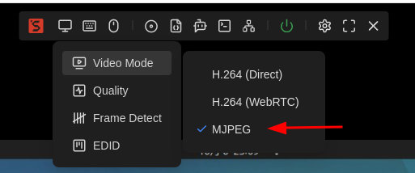
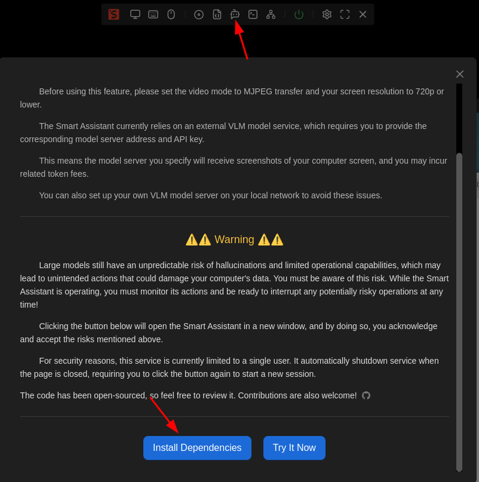
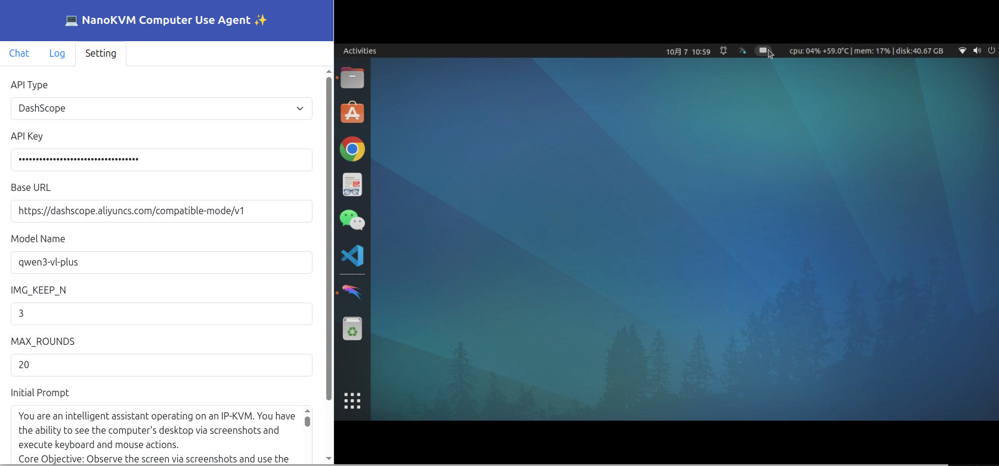
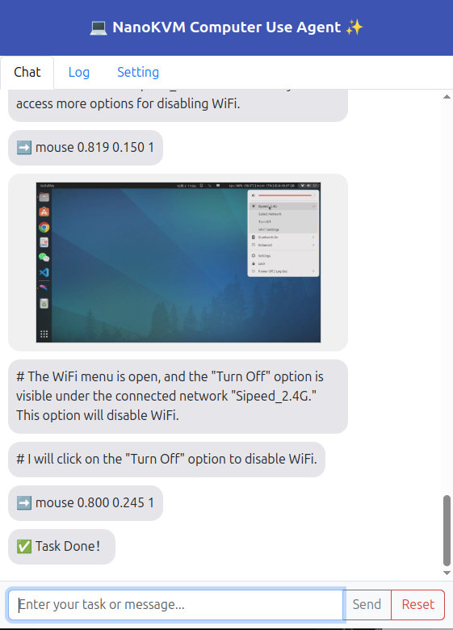

中文
中文实验性AI Agent
更新历史
| 日期 | 版本 | 作者 | 更新内容 |
|---|---|---|---|
| 2025-10-06 | v0.1 | zepan |
|
简介
NanoKVM-Pro 实验性引入了AI Agent功能，可以让用户快速体验当下热门的Computer Use Agent功能。
Computer Use是基于多模态AI大模型(VLM)，赋予用户使用自然语言自动化操控电脑的能力，而无需像以前那样进行复杂的脚本编程。
对于Computer Use概念，可以参考Anthropic发布的相关展示视频，和reddit上的一些使用体验：
https://www.reddit.com/r/ClaudeAI/comments/1ga3uqn/mindblowing_experience_with_claude_computer_use
NanoKVM-Pro的优势
NanoKVM-Pro实现的Computer Use功能相对 Anthropic 的Computer Use有何优点呢？
- 开箱即用
- NanoKVM-Pro已经内置Computer Use应用，用户点击web页面按键即可体验运行，无需像Anthropic提供的demo那样要求用户进行前置复杂的环境搭建
- 硬件级Computer Use
- Anthropic是基于软件的方案，所以仅能局限于MacOS 11和Windows10以上的系统，不支持Linux/Android。
- NanoKVM-Pro的Computer Use是硬件级的，因为它作为IPKVM天生能硬件级获取屏幕截图和硬件级操控鼠标，所以可以支持Windows/MacOS/Linux,甚至Android等
- 支持自部署
- Anthropic 是闭源的大模型, 用户必须上传屏幕截图到他们服务器，所以无法进行一些隐私性的电脑操作。
- NanoKVM-Pro支持自定义的VLM模型接口，不仅可以对接在线的大模型接口，还可以对接到用户自部署的开源VLM服务器(openai接口形式)！
- 在几个月前，还没有能够实现基础computer use的开源VL模型，但是就在最近(2025.10), alibaba发布的最新开源VL模型：qwen3-vl-235b-a22b-instruct, qwen3-vl-30b-a3b-instruct 已经可以实现基础的computer use功能！
- 随着AI大模型的快速发展，我们相信明年的开源VL模型将具备更强大的能力，使得自部署实用性computer use成为现实！
下面是NanoKVM-Pro执行简单示意任务（下载esp32 datasheet， 设置dns）的手机录屏：
作为实验性功能，NanoKVM-Pro的CUA目前是使用Python编写的独立服务，方便社区用户快速修改测试。
欢迎对AI Agent感兴趣且有开发能力的用户贡献代码：https://github.com/sipeed/nanokvm_cua
使用前的注意事项！！！
在介绍如何体验使用之前，我必须在这里反复重申CUA功能在当前的局限性和危险性。
当前大模型的能力非常有限，且有不受控的幻觉，当它有硬件级的操控能力时，有可能在幻觉下对电脑造成不可恢复的损坏。
比如今年(2025)就有报道用户使用Anthropic 的Computer Use功能，结果被删除了数据库。
你在体验CUA功能时，请保持在电脑旁，关注AI所执行的指令，一旦发现将要执行危险操作，及时中断它。
另外，CUA功能需要连接到VLM模型服务器，用户需要付费购买相关服务商的VLM tokens额度，填入秘钥，或者自己部署VLM服务器。
以上风险和费用情况请用户周知，使用CUA功能造成的一切电脑损失和额外费用，由用户自己承担。
快速指南
设置视频模式
CUA需要抓取屏幕截图，用户在使用CUA功能前，请切换"视频模式" 到 MJPEG
以及推荐设置桌面分辨率到1280x720:
- VLA模型运算高分辨率的图像时间更久，产生的tokens费用更高
- 更低的分辨率如800x600，会由于屏幕太小，导致CUA需要更多步骤操作，而增加费用和失败率

阅读注意事项
点击悬浮栏的"Smart Assistant"图标，会弹出CUA功能的注意事项。
我们再三强调请完全阅读理解CUA功能的风险后再执行。

安装依赖
CUA是实验性功能，同时也出于一些用户对这些隐私敏感性功能的顾虑，我们没有预装相关软件包。
首次体验该功能前，需要用户自己点击"安装依赖"按键进行相关软件包安装。
点击按键后，会在新页面中弹出终端页面，显示安装相关依赖包的进度，耐心等待完成即可。
运行CUA服务
安装完依赖后，点击"Try It Now"按键即可开启CUA服务，等待5~10s后，就会弹出CUA功能的新窗口。（如果没有弹出，请检查是否chrome浏览器拦截了弹出窗口。）
注意目前的CUA服务会增大KVM的CPU消耗，可能导致原KVM窗口的操作卡顿。
出于安全性考虑，CUA服务同时仅允许一个实例运行，如果你复制CUA页面的网址在新标签页中打开，是无法查看到内容的。
同样处于安全性考虑，你关闭或者刷新CUA网页后，CUA服务会自动关闭，需要重新在主页面点击按键启动。
CUA网页是电脑，手机浏览器兼容的布局，电脑上的页面布局如下所示：

如果你是开发者，可以在终端使用 python /kvmapp/cua/cua_webapp.py --auth 来手动运行
填写CUA配置
首次使用前，请切换到设置页面，填写相关设置。
- API Type
- DashScope: 默认使用该API形式，较为轻量 https://www.aliyun.com/product/bailian
- OpenAI: 最通用的API形式，特别是如果你要自部署VLM服务器，那么开源的vLLM/SGLang将提供该形式的API服务器
- Genai：TODO
- API Key
- 填写你在VLM服务商处获得的API Key，如果是自部署的，也请填上你部署时设置的key
- Base URL
- 如果你使用的是openAI形式 API，需要填写服务器的URL
- 比如 https://dashscope.aliyuncs.com/compatible-mode/v1
- 比如 https://192.168.0.xxx:8000/v1
- Model Name
- 填写你在VLM服务商处选择的VLM模型名称
- 商业模型推荐：qwen3-vl-plus
- 开源模型如： qwen3-vl-235b-a22b-instruct, qwen3-vl-30b-a3b-instruct
- 自部署模型，如使用vllm部署，请填写--served-model-name的名字
- IMG_KEEP_N
- 为节省tokens消耗，每次仅保留近IMG_KEEP_N次操作截图
- MAX_ROUNDS
- 单次任务允许的最大操作步骤，防止VLM无限死循环消耗过多tokens
- Initial Prompt
- 这是我们根据CUA任务编写的初始提示词，可以小心微调，不可以修改指令生成部分（除非你可以修改对应py脚本）
填写完成后，点击"提交"来生效配置。
下达自动化任务
切回到Chat栏，在最下方的文本框中填入你希望执行的任务，点击"send"，即可观察CUA的自动化操作。
注意右侧窗口是只读预览窗口，无法进行键鼠操作。
建议的初次测试任务可以参考"download raspberrypi datasheet", "set dns server to 8.8.8.8"
聊天窗口中会显示每一步的屏幕截图和CUA操作指令。
如果发现CUA进入死循环需要提示，可以点击"pause"暂停，输入一些提示，再点击发送来纠正CUA。
如果发现CUA将执行危险操作，也可以通过pause暂停。
完成任务或者需要新开任务，点击"Reset"来重置状态。

自部署VLM模型
硬件配置
得益于Qwen3-VL系列的发布，用户自部署VLM服务，实现CUA功能也成为了现实。
在2025年10月最新发布的Qwen3-VL系列开源模型的能力大幅提高，qwen3-vl-235b-a22b-instruct能力超越了去年的qwen-vl-max, qwen3-vl-30b-a3b-instruct超越了qwen2.5-vl-72b-instruct, 都达到了完成基础电脑操作的能力门槛。
qwen3-vl-235b-a22b-instruct是较大模型，至少需要4xH100 (4x80=320GB) 来运行FP8模型，对于普通用户来说比较困难。
我们主要介绍 qwen3-vl-30b-a3b-instruct 的自部署演示。
qwen3-vl-30b-a3b-instruct 有30B参数，算上额外的上下文内存需求，至少需要40B*DataType的内存需求。
可能的几种部署方式：
- 1x L40S, RTX6000, H1000, ... FP8
- 2x RTX4090, RTX5090 FP8
- 4xRTX3090 FP16
- CPU with 48GB+ memory, 16+ core; Q4
其中测试了社区用户发布的量化的Q4模型似乎量化误差太大，无法精确点击图标，可能需要等待官方更新精确的AWQ模型。
所以对于个人用户来说，4xRTX3090或2xRTX4090/5090是比较实际的部署方案。
目前我们实际测试通过vllm部署，也可以尝试使用SGLang部署，它们都支持提供openAI形式的API服务。
2025.10.15 更新
Qwen3-VL-8B和4B模型在今天发布了！
经过测试, qwen3-vl-8b-instruct 也能达到基础的CUA能力！
所以个人用户自部署体验CUA的门槛降到了单张RTX3090，或 32GB以上内存的CPU，这是大部分数码爱好者都能达到的配置，快来体验吧！
vllm部署VLM
- 安装vllm： https://docs.vllm.ai/en/stable/getting_started/installation/gpu.html
- 下载FP16或者FP8权重：
- 开启服务
4卡运行Qwen3-VL-30B-A3B-Instruct：
vllm serve \
/your_models_path//Qwen/Qwen3-VL-30B-A3B-Instruct \
--host 0.0.0.0 \
--port 8000 \
--tensor-parallel-size 4 \
--gpu-memory-utilization 0.90 \
--max-model-len 65536 \
--served-model-name qwen3-vl-30b-a3b-instruct \
--api-key skxxxxxx
单卡运行Qwen3-VL-8B-Instruct
vllm serve \
/your_models_path//Qwen/Qwen3-VL-8B-Instruct \
--host 0.0.0.0 \
--port 8000 \
--tensor-parallel-size 1 \
--gpu-memory-utilization 0.90 \
--max-model-len 32768 \
--served-model-name qwen3-vl-8b-instruct \
--api-key skxxxxxx
然后在CUA页面中填上对应的信息即可完全本地使用啦！
可以在服务器终端上看到相关运行信息：
(vllm) zp@server105:~/work/vllm$ vllm serve \ \
/home/zp/work/models/Qwen/Qwen3-VL-30B-A3B-Instruct \
--host 0.0.0.0 \
--port 8000 \
--tensor-parallel-size 4 \
--gpu-memory-utilization 0.90 \
--max-model-len 65536 \
--served-model-name Qwen3-VL-30B-A3B-Instruct\
--api-key sk123
INFO 10-06 15:56:22 [__init__.py:216] Automatically detected platform cuda.
(APIServer pid=41428) INFO 10-06 15:56:26 [api_server.py:1839] vLLM API server version 0.11.0
(APIServer pid=41428) INFO 10-06 15:56:26 [utils.py:233] non-default args: {'model_tag': '/home/zp/work/models/Qwen/Qwen3-VL-30B-A3B-Instruct', 'host': '0.0.0.0', 'api_key': ['sk123'], 'model': '/home/zp/work/models/Qwen/Qwen3-VL-30B-A3B-Instruct', 'max_model_len': 65536, 'served_model_name': ['Qwen3-VL-30B-A3B-Instruct'], 'tensor_parallel_size': 4}
(APIServer pid=41428) INFO 10-06 15:56:26 [model.py:547] Resolved architecture: Qwen3VLMoeForConditionalGeneration
(APIServer pid=41428) `torch_dtype` is deprecated! Use `dtype` instead!
(APIServer pid=41428) INFO 10-06 15:56:26 [model.py:1510] Using max model len 65536
(APIServer pid=41428) INFO 10-06 15:56:27 [scheduler.py:205] Chunked prefill is enabled with max_num_batched_tokens=2048.
INFO 10-06 15:56:32 [__init__.py:216] Automatically detected platform cuda.
(EngineCore_DP0 pid=41565) INFO 10-06 15:56:35 [core.py:644] Waiting for init message from front-end.
(EngineCore_DP0 pid=41565) INFO 10-06 15:56:35 [core.py:77] Initializing a V1 LLM engine (v0.11.0) with config: model='/home/zp/work/models/Qwen/Qwen3-VL-30B-A3B-Instruct', speculative_config=None, tokenizer='/home/zp/work/models/Qwen/Qwen3-VL-30B-A3B-Instruct', skip_tokenizer_init=False, tokenizer_mode=auto, revision=None, tokenizer_revision=None, trust_remote_code=False, dtype=torch.bfloat16, max_seq_len=65536, download_dir=None, load_format=auto, tensor_parallel_size=4, pipeline_parallel_size=1, data_parallel_size=1, disable_custom_all_reduce=False, quantization=None, enforce_eager=False, kv_cache_dtype=auto, device_config=cuda, structured_outputs_config=StructuredOutputsConfig(backend='auto', disable_fallback=False, disable_any_whitespace=False, disable_additional_properties=False, reasoning_parser=''), observability_config=ObservabilityConfig(show_hidden_metrics_for_version=None, otlp_traces_endpoint=None, collect_detailed_traces=None), seed=0, served_model_name=Qwen3-VL-30B-A3B-Instruct, enable_prefix_caching=True, chunked_prefill_enabled=True, pooler_config=None, compilation_config={"level":3,"debug_dump_path":"","cache_dir":"","backend":"","custom_ops":[],"splitting_ops":["vllm.unified_attention","vllm.unified_attention_with_output","vllm.mamba_mixer2","vllm.mamba_mixer","vllm.short_conv","vllm.linear_attention","vllm.plamo2_mamba_mixer","vllm.gdn_attention","vllm.sparse_attn_indexer"],"use_inductor":true,"compile_sizes":[],"inductor_compile_config":{"enable_auto_functionalized_v2":false},"inductor_passes":{},"cudagraph_mode":[2,1],"use_cudagraph":true,"cudagraph_num_of_warmups":1,"cudagraph_capture_sizes":[512,504,496,488,480,472,464,456,448,440,432,424,416,408,400,392,384,376,368,360,352,344,336,328,320,312,304,296,288,280,272,264,256,248,240,232,224,216,208,200,192,184,176,168,160,152,144,136,128,120,112,104,96,88,80,72,64,56,48,40,32,24,16,8,4,2,1],"cudagraph_copy_inputs":false,"full_cuda_graph":false,"use_inductor_graph_partition":false,"pass_config":{},"max_capture_size":512,"local_cache_dir":null}
(EngineCore_DP0 pid=41565) WARNING 10-06 15:56:35 [multiproc_executor.py:720] Reducing Torch parallelism from 44 threads to 1 to avoid unnecessary CPU contention. Set OMP_NUM_THREADS in the external environment to tune this value as needed.
(EngineCore_DP0 pid=41565) INFO 10-06 15:56:35 [shm_broadcast.py:289] vLLM message queue communication handle: Handle(local_reader_ranks=[0, 1, 2, 3], buffer_handle=(4, 16777216, 10, 'psm_9b2ff0e4'), local_subscribe_addr='ipc:///tmp/012ca9e5-5641-4fb7-a15a-3031d0bab01f', remote_subscribe_addr=None, remote_addr_ipv6=False)
INFO 10-06 15:56:39 [__init__.py:216] Automatically detected platform cuda.
INFO 10-06 15:56:39 [__init__.py:216] Automatically detected platform cuda.
INFO 10-06 15:56:39 [__init__.py:216] Automatically detected platform cuda.
INFO 10-06 15:56:39 [__init__.py:216] Automatically detected platform cuda.
INFO 10-06 15:56:44 [shm_broadcast.py:289] vLLM message queue communication handle: Handle(local_reader_ranks=[0], buffer_handle=(1, 10485760, 10, 'psm_c289f912'), local_subscribe_addr='ipc:///tmp/1da89172-ec87-4616-92cb-37f804606ec3', remote_subscribe_addr=None, remote_addr_ipv6=False)
INFO 10-06 15:56:44 [shm_broadcast.py:289] vLLM message queue communication handle: Handle(local_reader_ranks=[0], buffer_handle=(1, 10485760, 10, 'psm_e3f33e50'), local_subscribe_addr='ipc:///tmp/d22d4439-f2d4-4ad5-bf43-c8aefa75d97d', remote_subscribe_addr=None, remote_addr_ipv6=False)
INFO 10-06 15:56:44 [shm_broadcast.py:289] vLLM message queue communication handle: Handle(local_reader_ranks=[0], buffer_handle=(1, 10485760, 10, 'psm_202b7486'), local_subscribe_addr='ipc:///tmp/8dfcea44-3e7d-46c0-881a-bb2913de8283', remote_subscribe_addr=None, remote_addr_ipv6=False)
INFO 10-06 15:56:44 [shm_broadcast.py:289] vLLM message queue communication handle: Handle(local_reader_ranks=[0], buffer_handle=(1, 10485760, 10, 'psm_acb66435'), local_subscribe_addr='ipc:///tmp/a79c13a7-b107-4974-bc22-d18fbb753f4a', remote_subscribe_addr=None, remote_addr_ipv6=False)
[Gloo] Rank 2 is connected to 3 peer ranks. Expected number of connected peer ranks is : 3
[Gloo] Rank 0 is connected to 3 peer ranks. Expected number of connected peer ranks is : 3
[Gloo] Rank 1 is connected to 3 peer ranks. Expected number of connected peer ranks is : 3
[Gloo] Rank 3 is connected to 3 peer ranks. Expected number of connected peer ranks is : 3
[Gloo] Rank 2 is connected to 3 peer ranks. Expected number of connected peer ranks is : 3
[Gloo] Rank 0 is connected to 3 peer ranks. Expected number of connected peer ranks is : 3
[Gloo] Rank 1 is connected to 3 peer ranks. Expected number of connected peer ranks is : 3
[Gloo] Rank 3 is connected to 3 peer ranks. Expected number of connected peer ranks is : 3
INFO 10-06 15:56:46 [__init__.py:1384] Found nccl from library libnccl.so.2
INFO 10-06 15:56:46 [pynccl.py:103] vLLM is using nccl==2.27.3
INFO 10-06 15:56:46 [__init__.py:1384] Found nccl from library libnccl.so.2
INFO 10-06 15:56:46 [pynccl.py:103] vLLM is using nccl==2.27.3
INFO 10-06 15:56:46 [__init__.py:1384] Found nccl from library libnccl.so.2
INFO 10-06 15:56:46 [pynccl.py:103] vLLM is using nccl==2.27.3
INFO 10-06 15:56:46 [__init__.py:1384] Found nccl from library libnccl.so.2
INFO 10-06 15:56:46 [pynccl.py:103] vLLM is using nccl==2.27.3
WARNING 10-06 15:56:46 [symm_mem.py:58] SymmMemCommunicator: Device capability 8.6 not supported, communicator is not available.
WARNING 10-06 15:56:46 [symm_mem.py:58] SymmMemCommunicator: Device capability 8.6 not supported, communicator is not available.
WARNING 10-06 15:56:46 [symm_mem.py:58] SymmMemCommunicator: Device capability 8.6 not supported, communicator is not available.
WARNING 10-06 15:56:46 [symm_mem.py:58] SymmMemCommunicator: Device capability 8.6 not supported, communicator is not available.
WARNING 10-06 15:56:46 [custom_all_reduce.py:144] Custom allreduce is disabled because it's not supported on more than two PCIe-only GPUs. To silence this warning, specify disable_custom_all_reduce=True explicitly.
WARNING 10-06 15:56:46 [custom_all_reduce.py:144] Custom allreduce is disabled because it's not supported on more than two PCIe-only GPUs. To silence this warning, specify disable_custom_all_reduce=True explicitly.
WARNING 10-06 15:56:46 [custom_all_reduce.py:144] Custom allreduce is disabled because it's not supported on more than two PCIe-only GPUs. To silence this warning, specify disable_custom_all_reduce=True explicitly.
WARNING 10-06 15:56:46 [custom_all_reduce.py:144] Custom allreduce is disabled because it's not supported on more than two PCIe-only GPUs. To silence this warning, specify disable_custom_all_reduce=True explicitly.
INFO 10-06 15:56:46 [shm_broadcast.py:289] vLLM message queue communication handle: Handle(local_reader_ranks=[1, 2, 3], buffer_handle=(3, 4194304, 6, 'psm_a8cdf3eb'), local_subscribe_addr='ipc:///tmp/f25bfe61-de00-442b-9f93-e5edf37c4389', remote_subscribe_addr=None, remote_addr_ipv6=False)
[Gloo] Rank 0 is connected to 0 peer ranks. Expected number of connected peer ranks is : 0
[Gloo] Rank 0 is connected to 0 peer ranks. Expected number of connected peer ranks is : 0
[Gloo] Rank 0 is connected to 0 peer ranks. Expected number of connected peer ranks is : 0
[Gloo] Rank 0 is connected to 0 peer ranks. Expected number of connected peer ranks is : 0
[Gloo] Rank 0 is connected to 0 peer ranks. Expected number of connected peer ranks is : 0
[Gloo] Rank 0 is connected to 0 peer ranks. Expected number of connected peer ranks is : 0
[Gloo] Rank 0 is connected to 0 peer ranks. Expected number of connected peer ranks is : 0
[Gloo] Rank 0 is connected to 0 peer ranks. Expected number of connected peer ranks is : 0
[Gloo] Rank 0 is connected to 0 peer ranks. Expected number of connected peer ranks is : 0
[Gloo] Rank 0 is connected to 0 peer ranks. Expected number of connected peer ranks is : 0
[Gloo] Rank 0 is connected to 0 peer ranks. Expected number of connected peer ranks is : 0
[Gloo] Rank 0 is connected to 0 peer ranks. Expected number of connected peer ranks is : 0
[Gloo] Rank 0 is connected to 3 peer ranks. Expected number of connected peer ranks is : 3
[Gloo] Rank 2 is connected to 3 peer ranks. Expected number of connected peer ranks is : 3
[Gloo] Rank 1 is connected to 3 peer ranks. Expected number of connected peer ranks is : 3
[Gloo] Rank 3 is connected to 3 peer ranks. Expected number of connected peer ranks is : 3
INFO 10-06 15:56:46 [__init__.py:1384] Found nccl from library libnccl.so.2
INFO 10-06 15:56:46 [__init__.py:1384] Found nccl from library libnccl.so.2
INFO 10-06 15:56:46 [pynccl.py:103] vLLM is using nccl==2.27.3
INFO 10-06 15:56:46 [pynccl.py:103] vLLM is using nccl==2.27.3
INFO 10-06 15:56:46 [__init__.py:1384] Found nccl from library libnccl.so.2
INFO 10-06 15:56:46 [pynccl.py:103] vLLM is using nccl==2.27.3
INFO 10-06 15:56:46 [__init__.py:1384] Found nccl from library libnccl.so.2
INFO 10-06 15:56:46 [pynccl.py:103] vLLM is using nccl==2.27.3
INFO 10-06 15:56:46 [parallel_state.py:1208] rank 3 in world size 4 is assigned as DP rank 0, PP rank 0, TP rank 3, EP rank 3
INFO 10-06 15:56:46 [parallel_state.py:1208] rank 2 in world size 4 is assigned as DP rank 0, PP rank 0, TP rank 2, EP rank 2
INFO 10-06 15:56:46 [parallel_state.py:1208] rank 0 in world size 4 is assigned as DP rank 0, PP rank 0, TP rank 0, EP rank 0
INFO 10-06 15:56:46 [parallel_state.py:1208] rank 1 in world size 4 is assigned as DP rank 0, PP rank 0, TP rank 1, EP rank 1
WARNING 10-06 15:56:47 [topk_topp_sampler.py:66] FlashInfer is not available. Falling back to the PyTorch-native implementation of top-p & top-k sampling. For the best performance, please install FlashInfer.
WARNING 10-06 15:56:47 [topk_topp_sampler.py:66] FlashInfer is not available. Falling back to the PyTorch-native implementation of top-p & top-k sampling. For the best performance, please install FlashInfer.
WARNING 10-06 15:56:47 [topk_topp_sampler.py:66] FlashInfer is not available. Falling back to the PyTorch-native implementation of top-p & top-k sampling. For the best performance, please install FlashInfer.
WARNING 10-06 15:56:47 [topk_topp_sampler.py:66] FlashInfer is not available. Falling back to the PyTorch-native implementation of top-p & top-k sampling. For the best performance, please install FlashInfer.
(Worker_TP3 pid=41702) INFO 10-06 15:56:51 [gpu_model_runner.py:2602] Starting to load model /home/zp/work/models/Qwen/Qwen3-VL-30B-A3B-Instruct...
(Worker_TP0 pid=41699) INFO 10-06 15:56:51 [gpu_model_runner.py:2602] Starting to load model /home/zp/work/models/Qwen/Qwen3-VL-30B-A3B-Instruct...
(Worker_TP3 pid=41702) INFO 10-06 15:56:51 [gpu_model_runner.py:2634] Loading model from scratch...
(Worker_TP2 pid=41701) INFO 10-06 15:56:51 [gpu_model_runner.py:2602] Starting to load model /home/zp/work/models/Qwen/Qwen3-VL-30B-A3B-Instruct...
(Worker_TP3 pid=41702) INFO 10-06 15:56:51 [cuda.py:366] Using Flash Attention backend on V1 engine.
(Worker_TP1 pid=41700) INFO 10-06 15:56:51 [gpu_model_runner.py:2602] Starting to load model /home/zp/work/models/Qwen/Qwen3-VL-30B-A3B-Instruct...
(Worker_TP0 pid=41699) INFO 10-06 15:56:51 [gpu_model_runner.py:2634] Loading model from scratch...
(Worker_TP0 pid=41699) INFO 10-06 15:56:51 [cuda.py:366] Using Flash Attention backend on V1 engine.
(Worker_TP2 pid=41701) INFO 10-06 15:56:51 [gpu_model_runner.py:2634] Loading model from scratch...
Loading safetensors checkpoint shards: 0% Completed | 0/13 [00:00<?, ?it/s]
(Worker_TP1 pid=41700) INFO 10-06 15:56:51 [gpu_model_runner.py:2634] Loading model from scratch...
(Worker_TP2 pid=41701) INFO 10-06 15:56:52 [cuda.py:366] Using Flash Attention backend on V1 engine.
(Worker_TP1 pid=41700) INFO 10-06 15:56:52 [cuda.py:366] Using Flash Attention backend on V1 engine.
Loading safetensors checkpoint shards: 8% Completed | 1/13 [00:02<00:24, 2.02s/it]
Loading safetensors checkpoint shards: 15% Completed | 2/13 [00:04<00:22, 2.02s/it]
Loading safetensors checkpoint shards: 23% Completed | 3/13 [00:06<00:20, 2.04s/it]
Loading safetensors checkpoint shards: 31% Completed | 4/13 [00:08<00:18, 2.05s/it]
Loading safetensors checkpoint shards: 38% Completed | 5/13 [00:10<00:16, 2.09s/it]
Loading safetensors checkpoint shards: 46% Completed | 6/13 [00:12<00:14, 2.08s/it]
Loading safetensors checkpoint shards: 54% Completed | 7/13 [00:13<00:09, 1.64s/it]
Loading safetensors checkpoint shards: 62% Completed | 8/13 [00:15<00:08, 1.78s/it]
Loading safetensors checkpoint shards: 69% Completed | 9/13 [00:17<00:07, 1.87s/it]
Loading safetensors checkpoint shards: 77% Completed | 10/13 [00:19<00:05, 1.94s/it]
Loading safetensors checkpoint shards: 85% Completed | 11/13 [00:20<00:03, 1.84s/it]
Loading safetensors checkpoint shards: 92% Completed | 12/13 [00:23<00:01, 1.91s/it]
(Worker_TP2 pid=41701) INFO 10-06 15:57:16 [default_loader.py:267] Loading weights took 24.06 seconds
(Worker_TP2 pid=41701) INFO 10-06 15:57:16 [gpu_model_runner.py:2653] Model loading took 14.7708 GiB and 24.325636 seconds
(Worker_TP3 pid=41702) INFO 10-06 15:57:16 [default_loader.py:267] Loading weights took 25.29 seconds
(Worker_TP1 pid=41700) INFO 10-06 15:57:17 [default_loader.py:267] Loading weights took 24.85 seconds
Loading safetensors checkpoint shards: 100% Completed | 13/13 [00:25<00:00, 1.97s/it]
Loading safetensors checkpoint shards: 100% Completed | 13/13 [00:25<00:00, 1.94s/it]
(Worker_TP0 pid=41699)
(Worker_TP0 pid=41699) INFO 10-06 15:57:17 [default_loader.py:267] Loading weights took 25.24 seconds
(Worker_TP3 pid=41702) INFO 10-06 15:57:17 [gpu_model_runner.py:2653] Model loading took 14.7708 GiB and 25.534107 seconds
(Worker_TP1 pid=41700) INFO 10-06 15:57:17 [gpu_model_runner.py:2653] Model loading took 14.7708 GiB and 25.147370 seconds
(Worker_TP0 pid=41699) INFO 10-06 15:57:17 [gpu_model_runner.py:2653] Model loading took 14.7708 GiB and 25.517781 seconds
(Worker_TP3 pid=41702) INFO 10-06 15:57:18 [gpu_model_runner.py:3344] Encoder cache will be initialized with a budget of 153600 tokens, and profiled with 1 video items of the maximum feature size.
(Worker_TP2 pid=41701) INFO 10-06 15:57:18 [gpu_model_runner.py:3344] Encoder cache will be initialized with a budget of 153600 tokens, and profiled with 1 video items of the maximum feature size.
(Worker_TP1 pid=41700) INFO 10-06 15:57:18 [gpu_model_runner.py:3344] Encoder cache will be initialized with a budget of 153600 tokens, and profiled with 1 video items of the maximum feature size.
(Worker_TP0 pid=41699) INFO 10-06 15:57:18 [gpu_model_runner.py:3344] Encoder cache will be initialized with a budget of 153600 tokens, and profiled with 1 video items of the maximum feature size.
(Worker_TP1 pid=41700) INFO 10-06 15:57:44 [backends.py:548] Using cache directory: /home/zp/.cache/vllm/torch_compile_cache/f062b114ba/rank_1_0/backbone for vLLM's torch.compile
(Worker_TP1 pid=41700) INFO 10-06 15:57:44 [backends.py:559] Dynamo bytecode transform time: 12.36 s
(Worker_TP2 pid=41701) INFO 10-06 15:57:44 [backends.py:548] Using cache directory: /home/zp/.cache/vllm/torch_compile_cache/f062b114ba/rank_2_0/backbone for vLLM's torch.compile
(Worker_TP2 pid=41701) INFO 10-06 15:57:44 [backends.py:559] Dynamo bytecode transform time: 12.67 s
(Worker_TP0 pid=41699) INFO 10-06 15:57:45 [backends.py:548] Using cache directory: /home/zp/.cache/vllm/torch_compile_cache/f062b114ba/rank_0_0/backbone for vLLM's torch.compile
(Worker_TP0 pid=41699) INFO 10-06 15:57:45 [backends.py:559] Dynamo bytecode transform time: 12.90 s
(Worker_TP3 pid=41702) INFO 10-06 15:57:45 [backends.py:548] Using cache directory: /home/zp/.cache/vllm/torch_compile_cache/f062b114ba/rank_3_0/backbone for vLLM's torch.compile
(Worker_TP3 pid=41702) INFO 10-06 15:57:45 [backends.py:559] Dynamo bytecode transform time: 13.11 s
(Worker_TP1 pid=41700) INFO 10-06 15:57:50 [backends.py:164] Directly load the compiled graph(s) for dynamic shape from the cache, took 4.849 s
(Worker_TP2 pid=41701) INFO 10-06 15:57:50 [backends.py:164] Directly load the compiled graph(s) for dynamic shape from the cache, took 4.916 s
(Worker_TP0 pid=41699) INFO 10-06 15:57:50 [backends.py:164] Directly load the compiled graph(s) for dynamic shape from the cache, took 4.527 s
(Worker_TP3 pid=41702) INFO 10-06 15:57:50 [backends.py:164] Directly load the compiled graph(s) for dynamic shape from the cache, took 4.870 s
(Worker_TP3 pid=41702) WARNING 10-06 15:57:52 [fused_moe.py:798] Using default MoE config. Performance might be sub-optimal! Config file not found at ['/home/zp/work/vllm/.venv/lib/python3.12/site-packages/vllm/model_executor/layers/fused_moe/configs/E=128,N=192,device_name=NVIDIA_GeForce_RTX_3090.json']
(Worker_TP2 pid=41701) WARNING 10-06 15:57:52 [fused_moe.py:798] Using default MoE config. Performance might be sub-optimal! Config file not found at ['/home/zp/work/vllm/.venv/lib/python3.12/site-packages/vllm/model_executor/layers/fused_moe/configs/E=128,N=192,device_name=NVIDIA_GeForce_RTX_3090.json']
(Worker_TP0 pid=41699) WARNING 10-06 15:57:52 [fused_moe.py:798] Using default MoE config. Performance might be sub-optimal! Config file not found at ['/home/zp/work/vllm/.venv/lib/python3.12/site-packages/vllm/model_executor/layers/fused_moe/configs/E=128,N=192,device_name=NVIDIA_GeForce_RTX_3090.json']
(Worker_TP1 pid=41700) WARNING 10-06 15:57:52 [fused_moe.py:798] Using default MoE config. Performance might be sub-optimal! Config file not found at ['/home/zp/work/vllm/.venv/lib/python3.12/site-packages/vllm/model_executor/layers/fused_moe/configs/E=128,N=192,device_name=NVIDIA_GeForce_RTX_3090.json']
(Worker_TP3 pid=41702) INFO 10-06 15:57:52 [monitor.py:34] torch.compile takes 13.11 s in total
(Worker_TP1 pid=41700) INFO 10-06 15:57:52 [monitor.py:34] torch.compile takes 12.36 s in total
(Worker_TP2 pid=41701) INFO 10-06 15:57:52 [monitor.py:34] torch.compile takes 12.67 s in total
(Worker_TP0 pid=41699) INFO 10-06 15:57:52 [monitor.py:34] torch.compile takes 12.90 s in total
(Worker_TP3 pid=41702) INFO 10-06 15:57:53 [gpu_worker.py:298] Available KV cache memory: 2.31 GiB
(Worker_TP2 pid=41701) INFO 10-06 15:57:53 [gpu_worker.py:298] Available KV cache memory: 2.31 GiB
(Worker_TP0 pid=41699) INFO 10-06 15:57:53 [gpu_worker.py:298] Available KV cache memory: 2.31 GiB
(Worker_TP1 pid=41700) INFO 10-06 15:57:53 [gpu_worker.py:298] Available KV cache memory: 2.31 GiB
(EngineCore_DP0 pid=41565) INFO 10-06 15:57:53 [kv_cache_utils.py:1087] GPU KV cache size: 100,752 tokens
(EngineCore_DP0 pid=41565) INFO 10-06 15:57:53 [kv_cache_utils.py:1091] Maximum concurrency for 65,536 tokens per request: 1.54x
(EngineCore_DP0 pid=41565) INFO 10-06 15:57:53 [kv_cache_utils.py:1087] GPU KV cache size: 100,752 tokens
(EngineCore_DP0 pid=41565) INFO 10-06 15:57:53 [kv_cache_utils.py:1091] Maximum concurrency for 65,536 tokens per request: 1.54x
(EngineCore_DP0 pid=41565) INFO 10-06 15:57:53 [kv_cache_utils.py:1087] GPU KV cache size: 100,752 tokens
(EngineCore_DP0 pid=41565) INFO 10-06 15:57:53 [kv_cache_utils.py:1091] Maximum concurrency for 65,536 tokens per request: 1.54x
(EngineCore_DP0 pid=41565) INFO 10-06 15:57:53 [kv_cache_utils.py:1087] GPU KV cache size: 100,752 tokens
(EngineCore_DP0 pid=41565) INFO 10-06 15:57:53 [kv_cache_utils.py:1091] Maximum concurrency for 65,536 tokens per request: 1.54x
Capturing CUDA graphs (mixed prefill-decode, PIECEWISE): 100%|█████████████████████████████████████████████████████████████████████████| 67/67 [00:11<00:00, 5.66it/s]
Capturing CUDA graphs (decode, FULL): 100%|████████████████████████████████████████████████████████████████████████████████████████████| 35/35 [00:06<00:00, 5.78it/s]
(Worker_TP0 pid=41699) INFO 10-06 15:58:12 [gpu_model_runner.py:3480] Graph capturing finished in 19 secs, took 1.92 GiB
(Worker_TP2 pid=41701) INFO 10-06 15:58:12 [gpu_model_runner.py:3480] Graph capturing finished in 19 secs, took 1.92 GiB
(Worker_TP1 pid=41700) INFO 10-06 15:58:12 [gpu_model_runner.py:3480] Graph capturing finished in 19 secs, took 1.92 GiB
(Worker_TP3 pid=41702) INFO 10-06 15:58:12 [gpu_model_runner.py:3480] Graph capturing finished in 19 secs, took 1.92 GiB
(EngineCore_DP0 pid=41565) INFO 10-06 15:58:12 [core.py:210] init engine (profile, create kv cache, warmup model) took 54.87 seconds
(APIServer pid=41428) INFO 10-06 15:58:17 [loggers.py:147] Engine 000: vllm cache_config_info with initialization after num_gpu_blocks is: 6297
(APIServer pid=41428) INFO 10-06 15:58:18 [api_server.py:1634] Supported_tasks: ['generate']
(APIServer pid=41428) WARNING 10-06 15:58:18 [model.py:1389] Default sampling parameters have been overridden by the model's Hugging Face generation config recommended from the model creator. If this is not intended, please relaunch vLLM instance with `--generation-config vllm`.
(APIServer pid=41428) INFO 10-06 15:58:18 [serving_responses.py:137] Using default chat sampling params from model: {'temperature': 0.7, 'top_k': 20, 'top_p': 0.8}
(APIServer pid=41428) INFO 10-06 15:58:18 [serving_chat.py:139] Using default chat sampling params from model: {'temperature': 0.7, 'top_k': 20, 'top_p': 0.8}
(APIServer pid=41428) INFO 10-06 15:58:18 [serving_completion.py:76] Using default completion sampling params from model: {'temperature': 0.7, 'top_k': 20, 'top_p': 0.8}
(APIServer pid=41428) INFO 10-06 15:58:18 [api_server.py:1912] Starting vLLM API server 0 on http://0.0.0.0:8000
(APIServer pid=41428) INFO 10-06 15:58:18 [launcher.py:34] Available routes are:
(APIServer pid=41428) INFO 10-06 15:58:18 [launcher.py:42] Route: /openapi.json, Methods: HEAD, GET
(APIServer pid=41428) INFO 10-06 15:58:18 [launcher.py:42] Route: /docs, Methods: HEAD, GET
(APIServer pid=41428) INFO 10-06 15:58:18 [launcher.py:42] Route: /docs/oauth2-redirect, Methods: HEAD, GET
(APIServer pid=41428) INFO 10-06 15:58:18 [launcher.py:42] Route: /redoc, Methods: HEAD, GET
(APIServer pid=41428) INFO 10-06 15:58:18 [launcher.py:42] Route: /health, Methods: GET
(APIServer pid=41428) INFO 10-06 15:58:18 [launcher.py:42] Route: /load, Methods: GET
(APIServer pid=41428) INFO 10-06 15:58:18 [launcher.py:42] Route: /ping, Methods: POST
(APIServer pid=41428) INFO 10-06 15:58:18 [launcher.py:42] Route: /ping, Methods: GET
(APIServer pid=41428) INFO 10-06 15:58:18 [launcher.py:42] Route: /tokenize, Methods: POST
(APIServer pid=41428) INFO 10-06 15:58:18 [launcher.py:42] Route: /detokenize, Methods: POST
(APIServer pid=41428) INFO 10-06 15:58:18 [launcher.py:42] Route: /v1/models, Methods: GET
(APIServer pid=41428) INFO 10-06 15:58:18 [launcher.py:42] Route: /version, Methods: GET
(APIServer pid=41428) INFO 10-06 15:58:18 [launcher.py:42] Route: /v1/responses, Methods: POST
(APIServer pid=41428) INFO 10-06 15:58:18 [launcher.py:42] Route: /v1/responses/{response_id}, Methods: GET
(APIServer pid=41428) INFO 10-06 15:58:18 [launcher.py:42] Route: /v1/responses/{response_id}/cancel, Methods: POST
(APIServer pid=41428) INFO 10-06 15:58:18 [launcher.py:42] Route: /v1/chat/completions, Methods: POST
(APIServer pid=41428) INFO 10-06 15:58:18 [launcher.py:42] Route: /v1/completions, Methods: POST
(APIServer pid=41428) INFO 10-06 15:58:18 [launcher.py:42] Route: /v1/embeddings, Methods: POST
(APIServer pid=41428) INFO 10-06 15:58:18 [launcher.py:42] Route: /pooling, Methods: POST
(APIServer pid=41428) INFO 10-06 15:58:18 [launcher.py:42] Route: /classify, Methods: POST
(APIServer pid=41428) INFO 10-06 15:58:18 [launcher.py:42] Route: /score, Methods: POST
(APIServer pid=41428) INFO 10-06 15:58:18 [launcher.py:42] Route: /v1/score, Methods: POST
(APIServer pid=41428) INFO 10-06 15:58:18 [launcher.py:42] Route: /v1/audio/transcriptions, Methods: POST
(APIServer pid=41428) INFO 10-06 15:58:18 [launcher.py:42] Route: /v1/audio/translations, Methods: POST
(APIServer pid=41428) INFO 10-06 15:58:18 [launcher.py:42] Route: /rerank, Methods: POST
(APIServer pid=41428) INFO 10-06 15:58:18 [launcher.py:42] Route: /v1/rerank, Methods: POST
(APIServer pid=41428) INFO 10-06 15:58:18 [launcher.py:42] Route: /v2/rerank, Methods: POST
(APIServer pid=41428) INFO 10-06 15:58:18 [launcher.py:42] Route: /scale_elastic_ep, Methods: POST
(APIServer pid=41428) INFO 10-06 15:58:18 [launcher.py:42] Route: /is_scaling_elastic_ep, Methods: POST
(APIServer pid=41428) INFO 10-06 15:58:18 [launcher.py:42] Route: /invocations, Methods: POST
(APIServer pid=41428) INFO 10-06 15:58:18 [launcher.py:42] Route: /metrics, Methods: GET
(APIServer pid=41428) INFO: Started server process [41428]
(APIServer pid=41428) INFO: Waiting for application startup.
(APIServer pid=41428) INFO: Application startup complete.
(APIServer pid=41428) INFO 10-06 15:58:23 [chat_utils.py:560] Detected the chat template content format to be 'openai'. You can set `--chat-template-content-format` to override this.
(APIServer pid=41428) INFO: 192.168.1.11:54734 - "POST /v1/chat/completions HTTP/1.1" 200 OK
(APIServer pid=41428) INFO 10-06 15:58:28 [loggers.py:127] Engine 000: Avg prompt throughput: 170.4 tokens/s, Avg generation throughput: 5.7 tokens/s, Running: 0 reqs, Waiting: 0 reqs, GPU KV cache usage: 0.0%, Prefix cache hit rate: 0.0%
(APIServer pid=41428) INFO: 192.168.1.11:54734 - "POST /v1/chat/completions HTTP/1.1" 200 OK
(APIServer pid=41428) INFO: 192.168.1.11:54734 - "POST /v1/chat/completions HTTP/1.1" 200 OK
(APIServer pid=41428) INFO 10-06 15:58:38 [loggers.py:127] Engine 000: Avg prompt throughput: 642.9 tokens/s, Avg generation throughput: 9.9 tokens/s, Running: 0 reqs, Waiting: 0 reqs, GPU KV cache usage: 0.0%, Prefix cache hit rate: 56.3%
(APIServer pid=41428) INFO 10-06 15:58:48 [loggers.py:127] Engine 000: Avg prompt throughput: 0.0 tokens/s, Avg generation throughput: 0.0 tokens/s, Running: 0 reqs, Waiting: 0 reqs, GPU KV cache usage: 0.0%, Prefix cache hit rate: 56.3%